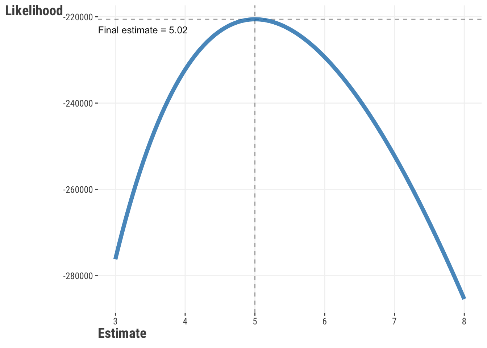
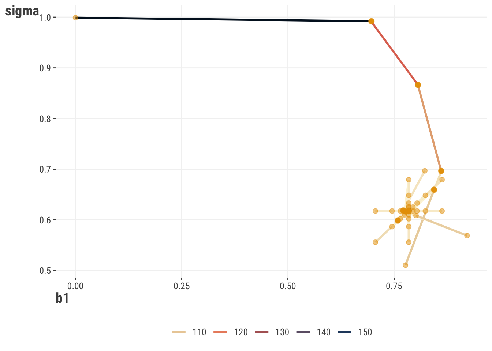
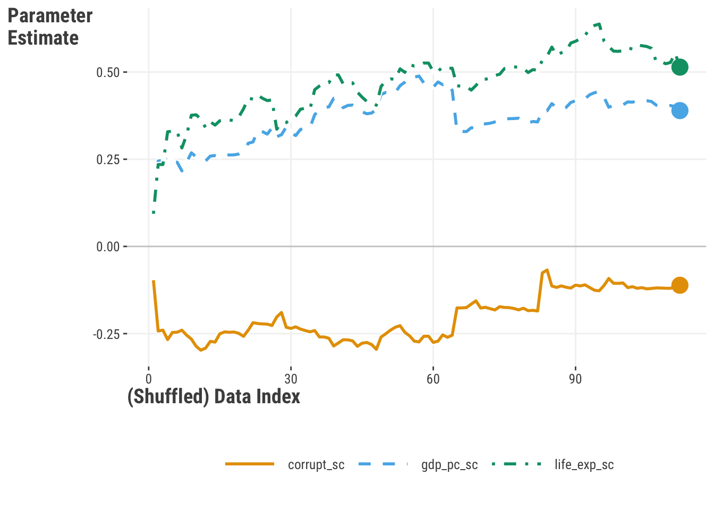
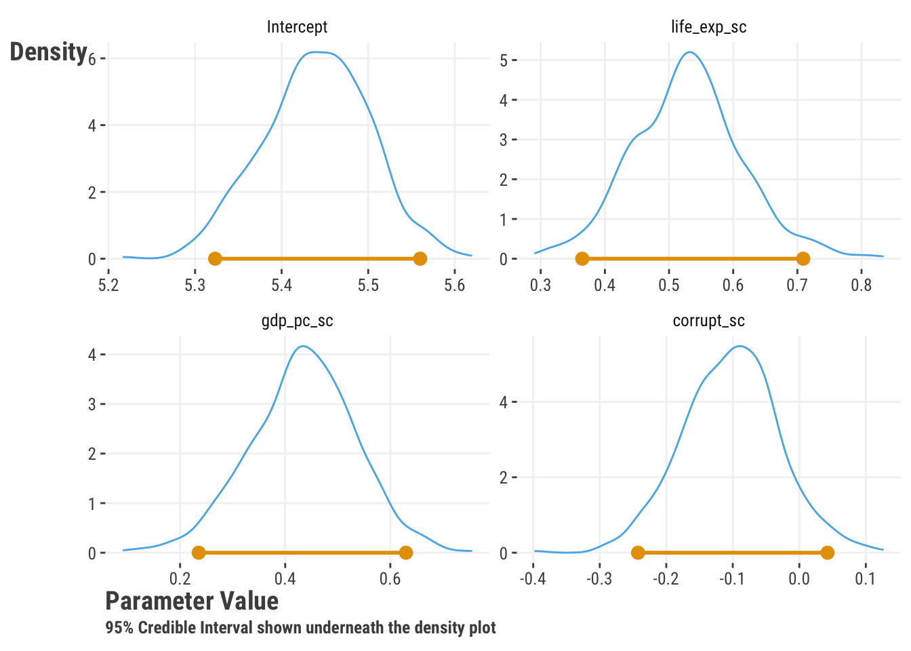

| term | happiness | life_exp | log_gdp_pc | corrupt |
|---|---|---|---|---|
| happiness | NA | 0.78 | 0.82 | −0.47 |
| life_exp | 0.78 | NA | 0.86 | −0.34 |
| log_gdp_pc | 0.82 | 0.86 | NA | −0.34 |
| corrupt | −0.47 | −0.34 | −0.34 | NA |
3 How Did We Get Here?
In our initial linear model, the key parameters are the coefficients for each feature. But how do we know what the coefficients are and come to those values? When we run a linear model using some program function, they appear magically, but it’s worth knowing a little bit about how they come to be, so let’s try and dive a little deeper!
Model estimation is the process of finding the parameters associated with a model that allow us to reach a particular modeling goal. Different types of models will have different parameters to estimate, and there are different ways to estimate them. In general though, the goal is the same, find the set of parameters that will lead to the best predictions under the current data modeling context.
With model estimation, we can break things down into the following steps:
- Start with an initial guess for the parameters
- Calculate the prediction error, or some function of it, or some other value that represents our model’s objective
- Update the guess
- Repeat steps 2 & 3 until we find a ‘best’ guess
Pretty straightforward, right? Well, it’s not always so simple, but this is the general idea in most applications. In this chapter, we’ll show how to do this ourselves to take away the mystery a bit from when you run standard model functions in typical contexts. Hopefully then you’ll gain more confidence when you do use them!
3.1 Key Ideas
A few concepts we’ll keep using here are fundamental to understanding estimation and optimization. We’ll return to these throughout the book, so it’s good to get some basic familiarity.
- Parameters are the values associated with a model, that we have to estimate.
- Estimation is the process of finding the parameters associated with a model.
- The objective function produces a value that we want to, for example, maximize or minimize.
- Prediction error is the difference between the actual value of the target and the predicted value of the target, and is often used to calculate the objective function.
- Optimization is the process of finding the parameters that maximize or minimize some objective function.
- Model Selection is the process of choosing the best model from a set of models.
3.1.1 Why this matters
When it comes to modeling, even knowing just a little bit about what goes on beyond the scenes is a great demystifier. And if models are less of a mystery, you’ll feel more confident in using them. Parts of what you see here are used in almost every common model used for statistics and machine learning, providing you even more of a foundation for understanding what’s going on.
3.1.2 Good to know
This chapter is more involved than most of the others, and is really for those who like to get their hands dirty. It’s all about ‘rolling your own’, and so we’ll be doing a lot of the work ourselves. If you’re not one of those types of people that gets much out of that, that’s ok, you can skip this chapter and still get a lot out of the rest of the book. But if you’re curious about how things work, or you want to be able to do more than just run a function, then we think you’ll find the following useful. You’d want to at least have your linear model basics down.
3.2 Data Setup
For the examples here, we’ll use the world happiness dataset for the year 2018. We’ll use the happiness score as our target, and we’ll use the GDP per capita as our primary feature, though we may throw in some others. Let’s take a look at the data here, but for more information see the appendix.
TODO: Link data description

Our happiness score has values from around 3-7, life expectancy and gdp appear to have some notable variability, and corruption perception is skewed toward lower values. We can also see that the features and target are correlated with each other, which is not surprising.
TODO: check the width of this table in pdf
We’ll do some minor cleaning and renaming of columns, and we’ll drop any rows with missing values. We’ll also scale the features so that they are on the same scale, which as noted in the data chapter, can help make estimation easier.
df_happiness = read_csv("data/world_happiness_2018.csv") |>
drop_na() |>
select(
country,
happiness_score,
healthy_life_expectancy_at_birth,
log_gdp_per_capita,
perceptions_of_corruption
) |>
rename(
happiness = happiness_score,
life_exp = healthy_life_expectancy_at_birth,
log_gdp_pc = log_gdp_per_capita,
corrupt = perceptions_of_corruption
) |>
# put gdp back on original scale before scaling
mutate(
gdp_pc = exp(log_gdp_pc),
across(life_exp:gdp_pc, \(x) scale(x)[,1])
) |>
select(-log_gdp_pc) # drop the log versiondf_happiness = (
pd.read_csv('data/world_happiness_2018.csv')
.dropna()
.rename(
columns = {
'happiness_score': 'happiness',
'healthy_life_expectancy_at_birth': 'life_exp',
'log_gdp_per_capita': 'log_gdp_pc',
'perceptions_of_corruption': 'corrupt'
}
)
.assign(
gdp_pc = lambda x: np.exp(x['log_gdp_pc']),
)
[['country', 'happiness','life_exp', 'gdp_pc', 'corrupt']]
)
from sklearn.preprocessing import StandardScaler
scaler = StandardScaler()
df_happiness[['life_exp', 'gdp_pc', 'corrupt']] = scaler.fit_transform(
df_happiness[['life_exp', 'gdp_pc', 'corrupt']]
)3.3 Starting Out by Guessing
So we’ll start with a model in which we predict a country’s level of happiness by their life expectancy, where if you can expect to live longer, maybe you’re probably in a country with better health care, higher incomes, and other important stuff. We’ll stick with our simple linear model as well.
As a starting point we can just guess what the parameter should be, but how would we know what to guess? How would we know which guesses are better than others? Let’s try a few and see how they do. Let’s say that we don’t think life expectancy matters, and that most countries are at a happiness value of 4. We can plug this into the model and see what we get:
\[ \textrm{prediction} = 4 + 0\cdot\textrm{life\_exp} \]
Alternatively we could use the data to inform our guess. We start with a mean of happiness score, but moving up a standard deviation of life expectancy (roughly ~1 years) would move us up a whole point of happiness. \[ \textrm{prediction} = \overline{\textrm{happiness}} + 1\cdot\textrm{life\_exp} \]
In this case, our offset (or intercept) is the mean of the target, and our coefficient for the scaled life expectancy is 1. This is probably a better guess, since it is at least data driven, but it’s still not great. But how do we know it’s better?
3.4 Prediction Error
We can compare the predictions from each guess to the actual values of the target, and observe how far off our predictions are from the observed target. This difference is the prediction error, or in the context of a linear model, they are also called residuals. We can express this as:
\[ \epsilon = y - \hat{y} \] \[ \textrm{error} = \textrm{target} - \textrm{(model based) guess} \]
Not only does this tell us how far off our model prediction is, it gives us a way to compare models. With out measure of prediction error, we can calculate a metric for total error for all observations/predictions, or similarlym the average error. If one model or parameter set has less total or average error, we can say it’s a better model than one that has more. Ideally we’d like to choose a model with the least error, but we’ll see that this is not always possible1. For now, let’s calculate the error for our two guesses. One thing though, if we miss the mark above or below our target, we still want it to count the same in terms of prediction error. In other words, if the true happiness score is 5 and our model predicts 5.5 or 4.5, we want those to count as the same kind of error when we total up our error2.
However, if we just take the average, you’ll see that it is roughly zero! This is by design for many common models, were we even will explicitly write the formula for the error as coming from a normal distribution with mean of zero. So we need to do something else to get a meaningful error metric. One way we can get around this is to use the squared error value, or maybe the absolute value. We’ll use squared error here, and we’ll calculate the mean of the squared errors for all our predictions. We’ll do this for our two models above.
y = df_happiness$happiness
# Calculate the error for the guess of 4
prediction = 4
mse_four = mean((y - prediction)^2)
# Calculate the error for our other guess
prediction = mean(y) + 1 * df_happiness$life_exp
mse_other = mean((y - prediction)^2)y = df_happiness['happiness']
# Calculate the error for the guess of four
prediction = 4
mse_four = np.mean((y - prediction)**2)
# Calculate the error for our other guess
prediction = y.mean() + 1 * df_happiness['life_exp']
mse_other = np.mean((y - prediction)**2)Now let’s look at our Mean Squared Error (MSE), and we’ll also inspect the square root of it, or the Root Mean Squared Error, as that puts things back on the original target scale, and tells us the standard deviation of our prediction errors. We also add the Mean Absolute Error (MAE) as another metric with straightforward interpretation. Inspecting the metrics, we can see that we are off on average by over a point for our ‘#4’ model, but notably less when guessing the mean.
| Model | MSE | RMSE | MAE | RMSE % drop | MAE % drop |
|---|---|---|---|---|---|
| #4 | 3.36 | 1.83 | 1.52 | ||
| Other | 0.50 | 0.71 | 0.58 | 61% | 62% |
We can see that the ‘other’ model is not only better, but results in a 61% drop in RMSE, and similar for MAE. We’d definitely prefer that model over the ‘#4’ model. Furthermore, we can see how we can compare models in a general fashion.
Now all of this is useful, and at least we can say one model is better than another. But you’re probably hoping there is an easier way to do get a good guess for our model parameters, especially when we have possibly dozens of features and/or parameters to keep track of, and there is!
3.5 Ordinary Least Squares
For a simple linear model, we can estimate the parameters in several ways, but the most common is to use the Ordinary Least Squares (OLS) method. OLS is a method of estimating the coefficients that minimizes the sum of the squared errors, which we’ve just been doing in the previous section3. In other words, it finds the coefficients that minimize the sum of the squared differences between the predicted values and the actual values. We can express this as:
\[ \textrm{Value} = \sum_{i=1}^{n} (y_i - \hat{y_i})^2 \tag{3.1}\]
Where \(y_i\) is the actual value of the target for observation \(i\), and \(\hat{y_i}\) is the predicted value from the model. The sum of the squared errors is also called the residual sum of squares (RSS), as opposed to the total sums of squares (i.e. the variance of the target), and the part explained by the model (model or explained sums of squares). The OLS method finds the coefficients that minimize the sum of the squared differences between the predicted values and the actual values. It’s called ordinary least squares because there are other least squares methods - generalized least squares, weighted least squares, and others, but we don’t need to worry about that for now. What matters is that we have a way to estimate the coefficients that minimizes the sum of the squared errors.
The resulting value - the sum or mean of the squared errors - can be referred to as our objective value, while the objective function is just the process of taking the predictions and observed target values as inputs and totaling up their squared differences to be returned as an output. We can use this value to find the best parameters for a specific model, as well as compare models with different parameters, such as a model with additional features versus one with fewer. We can also use this value to compare different types of models that are using the same objective function, such as a linear model and a decision tree model.
Let’s calculate the OLS estimate for our model. From our steps above, we need guesses and a way to update them. For now, we can just provide a bunch of guesses, and just move along from one set to the next, and ultimately just choose whichever has the lowest value.
# for later comparison
model_happy = lm(happiness ~ life_exp, data = df_happiness)
ols = function(X, y, par, sum_sq = FALSE) {
# add a column of 1s for the intercept
X = cbind(1, X)
# Calculate the predicted values
y_hat = X %*% par # %*% is matrix multiplication
# Calculate the error
error = y - y_hat
# Calculate the value as sum or mean squared error
value = crossprod(error) # crossprod is matrix multiplication
if (!sum_sq) {
value = value / nrow(X)
}
# Return the value
return(value)
}
# create a grid of guesses
guesses = crossing(
b0 = seq(1, 7, 0.1),
b1 = seq(-1, 1, 0.1)
)
# Example for one guess
ols(
X = df_happiness$life_exp,
y = df_happiness$happiness,
par = unlist(guesses[1, ])
) [,1]
[1,] 23.78# for later comparison
model_happy = smf.ols('happiness ~ life_exp', data = df_happiness)
model_happy = model_happy.fit()
def ols(par, X, y, sum = False):
# add a column of 1s for the intercept
X = np.c_[np.ones(X.shape[0]), X]
# Calculate the predicted values
y_hat = X @ par
# Calculate the error
value = np.sum((y - y_hat)**2)
# Calculate the value as sum or average
if not sum:
value = value / X.shape[0]
# Return the value
return(value)
# create a grid of guesses
from itertools import product
guesses = pd.DataFrame(
product(
np.arange(1, 7, 0.1),
np.arange(-1, 1, 0.1)
),
columns = ['b0', 'b1']
)
# Example for one guess
ols(
par = guesses.iloc[0,:],
X = df_happiness['life_exp'],
y = df_happiness['happiness']
)23.793842044979073Now we want to calculate the loss for each guess and find which one gives us the minimum function value. Note that above, we could get the total or mean squared error by setting the sum parameter to TRUE or FALSE. Either is fine, but it’s more common to use the mean, which is a little more understandable - how far do our guess deviate from the true value on average? In the following darker suggests a better mean squared error result from our approach.

If we inspect our results from the built-in functions, we had estimates of 5.44 and 0.89 for our coefficients versus the best guess from our approach of 5.4 and 0.9. These are very similar but not exactly the same, but this is mostly due to the granularity of our guesses. Even so, in the end we can see that we get pretty dang close to what our basic lm or statsmodels functions would get us. Pretty neat!
3.6 Optimization
Before we get into other objective functions, let’s think about a better way to find the best parameters for our model. Rather than just guessing, we can use a more systematic approach, and thankfully, there are tools out there to help us. We just use a function like our OLS function, give it a starting point, and let the algorithms do the rest! Thanks to some nifty approaches to making better guesses, these tools eventually arrive at a pretty good set of parameters. Well, they usually do, but not always- nothing’s perfect! But they are pretty good, and they are a lot better than guessing. Let’s see how we can use one of these tools to find the best parameters for our model.
Previously we created a set of guesses to search over to see which set of parameters resulted in prediction that matched the data best. What we did is called a grid search, and it is a bit of a brute force approach to finding the best fitting model. You can imagine a couple of unfortunate or problematic scenarios, such as having a very large number of parameters, or that our specified range doesn’t allow us to get to the right sets of parameters, or we specify a very large range, but the best fitting model is within a very narrow part of that range. In any of these cases we waste a lot of time, and may not find an optimal solution.
In general, we can think of optimization as a way to find the best parameters for our model. We start with an initial guess, see how well it does in terms of our objective function, and then try to improve it with a new guess. We continue to do so until a stopping point is reached. Here is an example.
- Start with an initial guess for the parameters
- Calculate the objective function given the parameters
- Update the parameters to a new guess (that hopefully improves the objective function)
- Calculate the objective function given the new parameters
- Repeat until the improvement is small enough, or we reach the desired number of iterations we want to attempt
This is what we described before with estimation in general. The key idea now is how we update the old parameters with a new guess at each iteration. Different optimization algorithms use different approaches to find the updated parameters. At some point, either the improvement is no longer practical, often refered to as our tolerance, or we reach a maximum number of iterations we want to attempt, and either of these is something we can set ourselves. If we meet the terms of our objective, we say that our model has converged. Sometimes, the number of iterations is not enough for us to reach convergence in terms of tolerance, and we have to try again with a different set of parameters, a different algorithm, maybe use some data transformations, or something else.
So let’s try it out! Both R and Python offer a function where we can specify the objective function, and it will try to find the best parameters for us. It needs several inputs:
- the objective function
- the initial guess for the parameters to get things going
- inputs to the objective function
- options for the optimization process, e.g. algorithm, maximum number of iterations, etc.
With these inputs, we’ll let the optimization functions do the rest of the work. We’ll also compare our results to the built-in functions to make sure we’re on the right track.
We’ll use the optim function in R.
our_result = optim(
par = c(1, 0),
fn = ols,
X = df_happiness$life_exp,
y = df_happiness$happiness,
method = "BFGS", # optimization algorithm
control = list( # specify tolerance, max iter, etc. here
tol = 1e-6,
maxit = 500
)
)
# our_resultWe’ll use the minimize function in Python.
from scipy.optimize import minimize
our_result = minimize(
fun = ols,
x0 = np.array([1., 0.]),
args = (
np.array(df_happiness['life_exp']),
np.array(df_happiness['happiness'])
),
method = 'BFGS', # optimization algorithm
tol = 1e-6, # tolerance
options = {
'maxiter': 500
}
)
# our_result| Parameter | Built-in | Our Result |
|---|---|---|
| Intercept | 5.4450 | 5.4450 |
| Life Exp. Coef. | 0.8880 | 0.8880 |
| Objective/MSE | 0.4890 | 0.4890 |
So our little function and the right tool allows us to come up with the same thing as base R and statsmodels! I hope you’re feeling pretty good at this point because you should! You just proved you could do what seemed before to be like magic, but really all it took is just a little knowledge about some key concepts. Let’s try some more!
3.7 Maximum Likelihood
In our example thus far, we have been minimizing the specific objective (or loss) function, which basically takes our parameter estimates, produces a prediction, and returns the sum or mean of the squared errors. But this is just one approach we could take. Now we’d like you to think about the data generating process. We have a model that says happiness is a function of life expectancy, but more specifically, let’s think about how the observed value of the happiness score is generated in a statistical sense. In particular, what kind of probability distribution might be involved? Ignoring the model, we might think that each happiness value is generated by some random process, and that the process is the same for each observation. Let’s assume that random process is a normal distribution. So something like this would describe it mathematically:
\[ \textrm{happiness} \sim N(\mu, \sigma) \]
where \(\mu\) is the mean of the happiness and \(\sigma\) is the standard deviation, or in other words, we can think of happiness as a random variable that is drawn from a normal distribution with \(\mu\) and \(\sigma\) as the parameters of that distribution.
Let’s apply this idea to our linear model setting. In this case, the mean is a function of life expectancy, and we’re not sure what the standard deviation is, but we can go ahead and write our model as follows.
\[ \mu = \beta_0 + \beta_1 * \textrm{life\_exp} \] \[ \textrm{happiness} \sim N(\mu, \sigma) \]
Now, we can think of the model as a way to estimate the parameters of the normal distribution, but we have an additional parameter to estimate. We still have our previous coefficients, but now we need to estimate \(\sigma\), which is basically our RMSE, as well. But we still have to think of things a little differently. When we compare our prediction to the observed value, we don’t look at the simple difference, but we are still interested in the discrepancy between the two. So now we think about the likelihood of observing the happiness score given our prediction, which is based on the estimated parameters, i.e. given the \(\mu\) and \(\sigma\), and \(\mu\) is a function of the coefficients and life expectancy. We can write this as:
\[ \textrm{Pr}(\textrm{happiness} \mid \textrm{life\_exp}, \beta_0, \beta_1, \sigma) \]
\[ \textrm{Pr}(\textrm{happiness} \mid \mu, \sigma) \]
Even more generally, the likelihood gives us a sense of the probability of the observed data given the parameter estimates \(\theta\). \[ \textrm{Pr}(\textrm{Data} \mid \theta) \]
Here is a simple code demo to get a likelihood in the context of our model. The values you see are referred to statistically as probability density values, and they are technically not probabilities, but rather the probability density, or relative likelihood, at that observation5. For your conceptual understanding, if it makes it easier, you can think of them in the same was as you do probabilities, but just know that technically they are not.
TODO: UPDATE VALUES WHEN DEMO IS SETTLED
# two example life expectancy scores, mean and 1 sd above
life_expectancy = c(0, 1)
# observed happiness scores
happiness = c(4, 5.2)
# predicted happiness with rounded coefs
mu = 5 + 1 * life_expectancy
# just a guess for sigma
sigma = .5
# likelihood for each observation
L = dnorm(happiness, mean = mu, sd = sigma)
L[1] 0.1080 0.2218from scipy.stats import norm
# two example life expectancy scores, mean and 1 sd above
life_expectancy = np.array([0, 1])
# observed happiness scores
happiness = np.array([4, 5.2])
# predicted happiness with rounded coefs
mu = 5 + 1 * life_expectancy
# just a guess for sigma
sigma = .5
# likelihood for each observation
L = norm.pdf(happiness, loc = mu, scale = sigma)
Larray([0.1080, 0.2218])So, given a guess at the parameters, and an assumption about the distribution of the data, we can calculate the likelihood of observing each data point, and sum those up, just like we did with our squared errors. In theory, we’d deal with the product of each likelihood, but in practice we sum the log of the likelihood, otherwise values would get too small for our computers to handle. Here is a corresponding function we can use to calculate the likelihood of the data given our parameters. Note that the actual likelihood value returned isn’t really interpretable, just that higher is better from a maximization standpoint. But we can use it to compare models with different sets of parameter guesses. Even if our total likelihoods under comparison are negative, we prefer the model with the relatively higher likelihood. As we just demonstrated, we’ll use optim to help us get good guesses6.
likelihood = function(par, X, y) {
X = cbind(1, X)
# setup
beta = par[-1] # coefficients
sigma = exp(par[1]) # error sd, exp keeps positive
N = nrow(X)
LP = X %*% beta # linear predictor
mu = LP # identity link in the glm sense
# calculate (log) likelihood
ll = dnorm(y, mean = mu, sd = sigma, log = TRUE)
-sum(ll) # for minimization
}
our_result = optim(
par = c(1, 0, 0),
fn = likelihood,
X = df_happiness$life_exp,
y = df_happiness$happiness
)
# our_resultdef likelihood(par, X, y):
# add a column of 1s for the intercept
X = np.c_[np.ones(X.shape[0]), X]
# setup
beta = par[1:] # coefficients
sigma = np.exp(par[0]) # error sd, exp keeps positive
N = X.shape[0]
LP = X @ beta # linear predictor
mu = LP # identity link in the glm sense
# calculate (log) likelihood
ll = norm.logpdf(y, loc = mu, scale = sigma)
return(-np.sum(ll))
our_result = minimize(
fun = likelihood,
x0 = np.array([1, 0, 0]),
args = (
np.array(df_happiness['life_exp']),
np.array(df_happiness['happiness'])
)
)How would we switch to a maximum likelihood approach using readily available functions? In both R and Python you can switch to using glm and GLM respectively as a start. We can use different likelihoods corresponding to the binomial, poisson and other distributions. Still other packages would allow even more distributions for consideration. In general, we choose a distribution that we feel best reflects the data generating process. For binary targets for example, we typically would feel a bernoulli or binomial distribution is appropriate. For count data, we might choose a poisson or negative binomial distribution. For targets that fall between 0 and 1, we might go for a beta distribution. There are many distributions, and even when some might feel more appropriate, we might choose another for convenience. Some distributions tend toward a normal (a.k.a. gaussian) distribution depending on various factors, while others are special cases of more general distributions. For example, the exponential distribution is a special case of the gamma distribution, and a cauchy is equivalent to a t distribution with 1 degree of freedom, and the t tends toward a normal with increasing degrees of freedom. Here is a visualization of the relationships among some of the more common distributions Wikipedia (2023).
TODO: fig needs work for pdf

Here are examples of standard GLM functions in R and Python
glm(happiness ~ life_exp, data = df_happiness, family = gaussian)
glm(binary_target ~ x1 + x2, data = some_data, family = binomial)
glm(count ~ x1 + x2, data = some_data, family = poisson)import statsmodels.formula.api as smf
smf.glm(
'happiness ~ life_exp',
data = df_happiness,
family = sm.families.Gaussian()
)
smf.glm(
'binary_target ~ x1 + x2',
data = some_data,
family = sm.families.Binomial()
)
smf.glm(
'count ~ x1 + x2',
data = some_data,
family = sm.families.Poisson()
)With that in mind, we can compare our result to a built-in function that has capabilities beyond OLS. As before, we’re duplicating the basic glm result. We show more decimal places on the log likelihood estimate to prove we aren’t getting exactly the same result
| Parameter | Built-in | Our Result |
|---|---|---|
| Intercept | 5.44 | 5.44 |
| Life Exp. Coef. | 0.89 | 0.89 |
| Sigma | 0.71 | 0.701 |
| LogLik (neg) | 118.80 | 118.80 |
| 1 Parameter estimate is exponentiated | ||
Let’s think more about what’s going on here. It turns out that our objective function defines a space or surface. We can think of it as a landscape, and we are trying to find the lowest point on that landscape. We can then think of our guesses as points on that landscape, and we are trying to find the lowest point. Let’s start get a sense of this with the following visualization, based on a single parameter. The data is drawn from Poisson distributed variable with true mean \(\theta=5\). We note the calculated likelihood increases as we estimate values for \(\theta\) closer to \(5\), or more precisely, whatever the mean observed value is for the data. However, with more and more data, the final ML estimate will converge on the true value. Model estimation finds that maximum on the curve, and optimization algorithms are the means to find it.

Now let’s add a parameter. If we have more than one parameter, we now have a surfaace to deal with. Given some starting point, an optimization procedure then travels along the surface looking for a minimum/maximum point. For simpler settings such as this, we can visualize the likelihood surface and its minimum point. However, even our simple demo model has three parameters plus the likelihood, so would be difficult to visualize without additional complexity. To get around this, we show the results for an alternate model where happiness is standardized also, which means the intercept is zero7, and we don’t have to show that.
TODO: CANT DO INTERACTIVE WITH PDF/LATEX. NEED WORKAROUND.

We can also see the path our estimates take, starting at a rather poor point, but quickly updating to estimates that result in a better likelihood value. We also see little exploratory jumps creating a star like pattern, before things ultimately settle to the best values. In general, these updates and paths are dependent on the optimization algorithm one uses.

It turns out that in the case of a normal distribution, the maximum likelihood estimate of the standard deviation is the estimate as the standard deviation of the residuals. Furthermore, the maximum likelihood estimates and OLS estimates converge to the same estimates as the sample size increases. For any data of significance, these estimates are indistinguishable, and the OLS estimate is the maximum likelihood estimate for linear regression.
3.7.0.1 Additional Thoughts on Maximum Likelihood
TODO: Remove?
One of the key things to note is that maximum likelihood is an estimation technique that relies on specifying the probability distribution that serves as the data generating process. Maximum likelihood allows us to be explicit about why we think those target values are the way they are. The likelihood also serves as a fundamental part of Bayesian analysis, which we’ll discuss more later. In general, maximum likelihood is a powerful technique that can be used in many contexts, and likelihoods can be used as the objective for many machine learning algorithms as well.
3.8 Estimation: Quick Review
TODO: MOVE WHERE? NEEDED?
At this point we understand a few things:
- Parameters are the values associated with a model
- Objective functions specify a modeling goal with which to estimate the parameters.
- Estimation is a way of finding the best model, i.e. parameters that help us achieve a goal.
- Optimization is the process of finding the parameters that maximize or minimize some objective function
- The likelihood is an alternate way to assess the match of data and model, and allows us to compare the relative fits of models
3.9 Penalized Objectives
TODO: MOVE TO AFTER CLASSIFICATION?
One thing we may want to take into account of with our models is their complexity, especially in the context of overfitting. We talk about this with machine learning also, but the basic idea is that we can get too close to the data we have, such that when we try to predict on new data, our performance suffers or even gets worse than a simpler model. In other words, we are not generalizing well. One way to deal with this is to penalize the objective function value for complexity, or at least favor simpler models that might do as well. In some contexts this is called regularization, and in other contexts shrinkage, since the parameter estimates are typically shrunk toward some specific value (e.g., zero).
As a starting point, in our basic linear model we can add a penalty that is applied to the size of coefficients. This is called ridge regression, or, more mathily, as L2 regularization. The penalty is just the sum of the squared coefficients multiplied by a some value, which we call \(\lambda\). We can write this formally as:
\[ \textrm{Value} = \sum_{i=1}^{n} (y_i - \hat{y_i})^2 + \lambda \sum_{j=1}^{p} \beta_j^2 \tag{3.2}\]
The first part is the same as before (Equation 3.1), but the second part is the penalty for \(p\) features. The penalty is the sum of the squared coefficients multiplied by some value, which we call \(\lambda\). This is an additional model parameter that we typically want to estimate in some fashion, e.g. through cross-validation. This kind of parameter is often called a hyperparameter, mostly just to distinguish it from those that may be of actual interest. For example, we could probably care less what the actual value for \(\lambda\) is, but we would still be interested in the coefficients.
Interestingly, as you’ll notice that this is just OLS+, you might be wondering how our results or interpretation might change. Well for starters, L2 regularization is not limited to linear regression, so just keep that in mind. But also, if we know that OLS produces unbiased estimates if assumptions of linear regression are met, that means, if these aren’t the same estimates, they must be biased, right? Your are correct! As we talk about with machine learning (Section 6.4), the bias-variance tradeoff is a key concept in machine learning, and this is a good example of that. We are introducing some bias in order to reduce the variance. In other words, we are willing to accept some bias in order to get a model that generalizes better.
Another common penalty that is the sum of the absolute value of the coefficients, which is called lasso regression or L1 regularization. An interersting property of the lasso is that in typical implementations, it will potentially zero out coefficients, which is the same as dropping the feature from the model altogether. This is a form of feature selection or variable selection. The true values are never zero, but if we want to use a ‘best subset’ of features, this is one way we could do so. We can write the lasso objective as:
\[ \textrm{Value} = \sum_{i=1}^{n} (y_i - \hat{y_i})^2 + \lambda \sum_{j=1}^{p} |\beta_j| \tag{3.3}\]
But let’s get to a code example to make sure we understand this better! Here is an example of a function that calculates the ridge objective. To make things interesting, let’s add the other features we talked about regarding GDP per capita and perceptions of corruption.
ridge = function(par, X, y, lambda = 0) {
# add a column of 1s for the intercept
X = cbind(1, X)
# Calculate the predicted values
mu = X %*% par # %*% is matrix multiplication
# Calculate the value as sum squared error
error = crossprod(y - mu)
# Add the penalty
value = error + lambda * crossprod(par)
return(value)
}
our_result = optim(
par = c(0, 0, 0, 0),
fn = ridge,
X = df_happiness |> select(-happiness, -country) |> as.matrix(),
y = df_happiness$happiness,
lambda = 0.1,
method = "BFGS"
)# we use lambda_ because lambda is a reserved word in python
def ridge(par, X, y, lambda_ = 0):
# add a column of 1s for the intercept
X = np.c_[np.ones(X.shape[0]), X]
# Calculate the predicted values
mu = X @ par
# Calculate the error
value = np.sum((y - mu)**2)
# Add the penalty
value = value + lambda_ * np.sum(par**2)
return(value)
our_result = minimize(
fun = ridge,
x0 = np.array([0, 0, 0, 0]),
args = (
np.array(df_happiness.drop(columns=['happiness', 'country'])),
np.array(df_happiness['happiness']),
0.1
)
)We can compare this to built-in functions as we have before, and can see that the results are very similar, but not exactly the same. We would not worry about such differences in practice, but the main point is again, we can use simple functions that do just about as well as any what we’d get from package output.
| Parameter | Built-in1 | Our Result |
|---|---|---|
| Intercept | 5.44 | 5.44 |
| Life Exp. Coef. | 0.49 | 0.52 |
| Corrupt | −0.12 | −0.11 |
| GDP_PC | 0.42 | 0.44 |
| 1 Showing results from R glmnet package with alpha = 0, lambda = .1 | ||
3.10 Classification
So far we’ve been assuming a continuous target, but what if we have a categorical target? Now we have to learn a bunch of new stuff for that situation, right? Actually, no! When we want to model categorical targets, conceptually nothing changes - we can still have an objective function that maximizes or minimizes some goal, use the same algorithms to estimate parameters, etc. However, we need to think about how we can do this in a way that makes sense for the target.
3.10.1 Misclassification
A straightforward correspondence to MSE is a function that minimizes classification error (or maximizes accuracy). In other words, we can think of the objective function as the proportion of incorrect classifications. This is called the misclassification rate. We can write this as:
\[ \textrm{Loss} = \frac{1}{n} \sum_{i=1}^{n} \mathbb{1}(y_i \neq \hat{y_i}) \]
Where \(y_i\) is the actual value of the target for observation \(i\), arbitrarily coded as 1 or 0, and \(\hat{y_i}\) is the predicted class from the model. The \(\mathbb{1}\) is an indicator function that returns 1 if the condition is true, and 0 otherwise. In other words, we are counting the number of times the predicted value is not equal to the actual value, and dividing by the number of observations. Very straightforward, so let’s do this ourselves!
# misclassification rate
misclassification = function(par, X, y, class_threshold = .5) {
X = cbind(1, X)
# Calculate the predicted values
mu = X %*% par # %*% is matrix multiplication
# Convert to a probability ('sigmoid' function)
p = 1 / (1 + exp(-mu))
# Convert to a class
predicted_class = as.integer(
ifelse(p > class_threshold, "good", "bad")
)
# Calculate the error
error = y - predicted_class
return(mean(error))
}def misclassification_rate(par, X, y, class_threshold = .5):
# add a column of 1s for the intercept
X = np.c_[np.ones(X.shape[0]), X]
# Calculate the predicted values
mu = X @ par
# Convert to a probability ('sigmoid' function)
p = 1 / (1 + np.exp(-mu))
# Convert to a class
predicted_class = np.where(p > class_threshold, 1, 0)
# Calculate the error
error = y - predicted_class
return(np.mean(error))We’ll leave it as an exercise to the reader to play around with this, as the next objective function is more commonly used. But at least you can see how easy it can be to switch to the classification case.
3.10.2 Log loss
Another approach is to use the log loss, sometimes called logistic loss or cross-entropy. If we have just the binary case it is:
\[ \textrm{Loss} = -\sum_{i=1}^{n} y_i \log(\hat{y_i}) + (1 - y_i) \log(1 - \hat{y_i}) \]
Where \(y_i\) is the actual value of the target for observation \(i\), and \(\hat{y_i}\) is the predicted value from the model (essentially a probability). It turns out that this is the same as log-likelihood used in a maximum likelihood approach for logistic regression, made negative for minimization. We typically prefer this objective function to classification error because it results in a smooth optimization surface, like in the visualization we showed before for maximum likelihood (Figure 3.2), which means it is differentiable in mathemetical sense. This is important because it allows us to use optimization algorithms that rely on derivatives in updating the parameter estimates. You don’t really need to get into that too much, but just know that it is a good thing. Here’s some code to try out.
objective = function(par, X, y) {
X = cbind(1, X)
# Calculate the predicted values on the raw scale
y_hat = X %*% par
# Convert to a probability ('sigmoid' function)
y_hat = 1 / (1 + exp(-y_hat))
# likelihood (or dbinom(y, size = 1, prob = y_hat, log = TRUE))
ll = y * log(y_hat) + (1 - y) * log(1 - y_hat)
return(sum(-ll))
}def objective(par, X, y):
# add a column of 1s for the intercept
X = np.c_[np.ones(X.shape[0]), X]
# Calculate the predicted values
y_hat = X @ par
# Convert to a probability ('sigmoid' function)
y_hat = 1 / (1 + np.exp(-y_hat))
# likelihood
ll = y * np.log(y_hat) + (1 - y) * np.log(1 - y_hat)
return(-np.sum(ll))Let’s go ahead and demonstrate this. Let’s go back to our movie review data, but we’ll use a version of our rating where a movie is ‘good’ if the rating is 3 or greater, and ‘bad’ otherwise, which we have in our processed version of the data. Our features will be the review year (starting at zero), reviewer age, and word count. Let’s use our previous optimization functions, and compare our results to the built-in complements.
df_reviews_pr = read_csv("data/movie_reviews_processed.csv")
mod_logloss = optim(
par = c(0, 0, 0, 0),
fn = objective,
X = df_reviews_pr |>
select(review_year_0, age_sc, word_count_sc) |>
as.matrix(),
y = df_reviews_pr$rating_good
)
mod_glm = glm(
rating_good ~ review_year_0 + age_sc + word_count_sc,
data = df_reviews_pr,
family = binomial
)from scipy.optimize import minimize
mod_logloss = minimize(
objective,
x0 = np.array([0, 0, 0, 0]),
args = (
df_reviews_pr[['review_year_0', 'age_sc', 'word_count_sc']],
df_reviews_pr['rating_good']
)
)
mod_glm = smf.glm(
'rating_good ~ review_year_0 + age_sc + word_count_sc',
data = df_reviews_pr,
family = sm.families.Binomial()
).fit(method = 'lbfgs')Once again we can see that the results are very similar, but not exactly the same, though actually have to go out several decimal places before we start seeing differences between our result and the built-in function.
| name | Ours | GLM |
|---|---|---|
| LogLike | 622.5935 | 622.5935 |
| int | −0.0819 | −0.0818 |
| review_year_0 | 0.0213 | 0.0213 |
| age_sc | −0.2213 | −0.2213 |
| word_count_sc | −0.7344 | −0.7343 |
So when it comes to classification, you should feel confident in what’s going on under the hood, just like you did with a numeric target. Conceptually it really is the same approach.
3.11 Optimization Algorithms
When it comes to optimization, there are a number of algorithms that have been developed over time. We’ll demonstate one of the most popular ones used in machine learning, but there many variants of this one even! The main thing to keep in mind is that these are all just ways to find the best fitting parameters for a model. The algorithms differ in how they do this, and some may be better suited for certain data tasks, or provide computatational advantages.
3.11.1 Gradient Descent
One of the most common approaches in optimization is called gradient descent. The idea behind it is that we can use the gradient of the objective function to guide us to the best fitting parameters. We still use estimation approaches like maximum likelihood - gradient descent is just a way to find that path along the objective surface. More formally, the gradient is the vector of partial derivatives of the objective function with respect to each parameter. That may not mean much to you, but the basic idea is that the gradient is a vector that points in the direction of steepest ascent in terms of the objective function. So if we want to maximize the objective function, we can take a step in the direction of the gradient, and if we want to minimize it, we can take a step in the opposite direction of the gradient. The size of the step is called the learning rate, and, like our penalty parameter we saw with penalized regression, it is a hyperparameter that we can tune. If the learning rate is too small, it will take a longer time to converge. If the learning rate is too large, we might overshoot the objective and never converge. There are a number of variations on gradient descent that have been developed over time. Here is a function to illustrate the process. Let’s see this in action with the happiness data model we used previously.
gradient_descent = function(
par,
X,
y,
tolerance = 1e-3,
maxit = 1000,
learning_rate = 1e-3,
adapt = FALSE,
verbose = TRUE
) {
# add a column of 1s for the intercept
X = cbind(1, X)
N = nrow(X)
# initialize
beta = par
names(beta) = colnames(X)
mse = crossprod(X %*% beta - y) / N
tol = 1
iter = 1
while (tol > tolerance && iter < maxit) {
LP = X %*% beta
grad = t(X) %*% (LP - y)
betaCurrent = beta - learning_rate * grad
tol = max(abs(betaCurrent - beta))
beta = betaCurrent
mse = append(mse, crossprod(LP - y) / N)
iter = iter + 1
if (adapt) {
stepsize = ifelse(
mse[iter] < mse[iter - 1],
stepsize * 1.2,
stepsize * .8
)
}
if (verbose && iter %% 10 == 0) {
message(paste("Iteration:", iter))
}
}
list(
par = beta,
loss = mse,
MSE = crossprod(LP - y) / nrow(X),
iter = iter,
fitted = LP
)
}
our_result = gradient_descent(
par = c(0, 0, 0, 0),
X = df_happiness |> select(life_exp, gdp_pc, corrupt) |> as.matrix(),
y = df_happiness$happiness,
learning_rate = 1e-3,
verbose = FALSE
)def gradient_descent(
par,
X,
y,
tolerance = 1e-3,
maxit = 1000,
learning_rate = 1e-3,
adapt = False,
verbose = True
):
# add a column of 1s for the intercept
X = np.c_[np.ones(X.shape[0]), X]
# initialize
beta = par
loss = np.sum((X @ beta - y)**2)
tol = 1
iter = 1
while (tol > tolerance and iter < maxit):
LP = X @ beta
grad = X.T @ (LP - y)
betaCurrent = beta - learning_rate * grad
tol = np.max(np.abs(betaCurrent - beta))
beta = betaCurrent
loss = np.append(loss, np.sum((LP - y)**2))
iter = iter + 1
if (adapt):
stepsize = np.where(
loss[iter] < loss[iter - 1],
stepsize * 1.2,
stepsize * .8
)
if (verbose and iter % 10 == 0):
print("Iteration:", iter)
return({
"par": beta,
"loss": loss,
"RSE": np.sqrt(np.sum((LP - y)**2) / (X.shape[0] - X.shape[1])),
"iter": iter,
"fitted": LP
})
our_result = gradient_descent(
par = np.array([0, 0, 0, 0]),
X = df_happiness[['life_exp', 'gdp_pc', 'corrupt']].to_numpy(),
y = df_happiness['happiness'].to_numpy(),
learning_rate = 1e-3,
verbose = False
)Comparing our results, we have the following table. In what has become the norm, we see that the results are very similar.
| Value | Built-in | Our Result |
|---|---|---|
| Intercept | 5.445 | 5.437 |
| Life Exp. Coef. | 0.525 | 0.521 |
| GDP_PC | 0.438 | 0.439 |
| Corrupt | −0.105 | −0.107 |
| MSE | 0.367 | 0.367 |
In addition, when we visualize the loss function across iterations, we see smooth decline in the MSE value as we go along each iteration. This is a good sign that we are converging to a good solution.

3.11.2 Stochastic Gradient Descent
Stochastic gradient descent (SGD) is a variation on gradient descent that uses a random sample of the data to estimate the gradient, while the ‘true’ gradient is the gradient of the objective function with respect to all of the data. As such, it’s less accurate than the ‘batch’ gradient descent in some sense, but the advantage of SGD is that it is faster. In practice, SGD is often used in machine learning applications where the data is large, and the tradeoff between accuracy and speed is worth it.
Let’s see this in action with the happiness data model we used previously. The following is a conceptual version of the AdaGrad approach8, which is a variation of stochastic gradient descent that adjusts the learning rate for each parameter. We will also add a variation that averages the parameter estimates across iterations, which is a common approach to improve the performance of stochastic gradient descent, but by default it is not used, just something you can play with. We are going to use a ‘batch size’ of one, which is similar to a ‘streaming’ or ‘online’ version where we update the model with each observation. Since our data are alphabetically ordered, we’ll shuffle the data first. We’ll also use a stepsize_tau parameter, which is a way to adjust the learning rate at early iterations. We’ll set it to zero for now, but you can play with it to see how it affects the results. The values for the learning rate and stepsize_tau are arbitrary, selected after some initial playing around, but you can play with them to see how they affect the results.
TODO: SHOULD MAYBE CLEAN UP/ALTER TO LESS VERBOSE VERSION
stochastic_gradient_descent = function(
par, # parameter estimates
X, # model matrix
y, # target variable
learning_rate = 1, # the learning rate
stepsize_tau = 0, # if > 0, a check on the LR at early iterations
average = FALSE # a variation of the approach
) {
# initialize
X = cbind(1, X)
beta = par
# Collect all estimates
betamat = matrix(0, nrow(X), ncol = length(beta))
# Collect fitted values at each point))
fits = NA
# Collect loss at each point
loss = NA
# adagrad per parameter learning rate adjustment
s = 0
# a smoothing term to avoid division by zero
eps = 1e-8
for (i in 1:nrow(X)) {
Xi = X[i, , drop = FALSE]
yi = y[i]
# matrix operations not necessary here,
# but makes consistent with standard gd func
LP = Xi %*% beta
grad = t(Xi) %*% (LP - yi)
s = s + grad^2 # adagrad approach
# update
beta = beta - learning_rate / (stepsize_tau + sqrt(s + eps)) * grad
# a variation
if (average & i > 1) {
beta = beta - 1 / i * (betamat[i - 1, ] - beta)
}
betamat[i, ] = beta
fits[i] = LP
loss[i] = crossprod(LP - yi)
}
LP = X %*% beta
lastloss = crossprod(LP - y)
list(
par = beta, # final estimates
par_chain = betamat, # estimates at each iteration
MSE = sum(lastloss) / nrow(X),
fitted = LP
)
}
# setting a seed ensures replicability
set.seed(123)
# generate random sample indices (could also have done within the function)
idx = sample(1:nrow(df_happiness), nrow(df_happiness))
X_train = df_happiness |>
select(life_exp, gdp_pc, corrupt) |>
dplyr::slice(idx) |>
as.matrix()
y_train = df_happiness$happiness[idx]
our_result = stochastic_gradient_descent(
par = c(mean(df_happiness$happiness), 0, 0, 0),
X = X_train,
y = y_train,
learning_rate = .15,
stepsize_tau = .1
)def stochastic_gradient_descent(
par, # parameter estimates
X, # model matrix
y, # target variable
learning_rate = 1, # the learning rate
stepsize_tau = 0, # if > 0, a check on the LR at early iterations
average = False # a variation of the approach
):
# initialize
X = np.c_[np.ones(X.shape[0]), X]
beta = par
# Collect all estimates
betamat = np.zeros((X.shape[0], beta.shape[0]))
# Collect fitted values at each point))
fits = np.zeros(X.shape[0])
# Collect loss at each point
loss = np.zeros(X.shape[0])
# adagrad per parameter learning rate adjustment
s = 0
# a smoothing term to avoid division by zero
eps = 1e-8
for i in range(X.shape[0]):
Xi = X[None, i, :]
yi = y[i]
# matrix operations not necessary here,
# but makes consistent with standard gd func
LP = Xi @ beta
grad = Xi.T @ (LP - yi)
s = s + grad**2 # adagrad approach
# update
beta = beta - learning_rate / \
(stepsize_tau + np.sqrt(s + eps)) * grad
# a variation
if (average & i > 1):
beta = beta - 1 / i * (betamat[i - 1, :] - beta)
betamat[i, :] = beta
fits[i] = LP
loss[i] = np.sum((LP - yi)**2)
LP = X @ beta
lastloss = np.sum((LP - y)**2)
return({
"par": beta, # final estimates
"par_chain": betamat, # estimates at each iteration
"MSE": lastloss / X.shape[0],
"fitted": LP
})
# setting a seed ensures replicability
np.random.seed(1234)
# generate random sample indices (could also have done within the function)
idx = np.random.choice(
df_happiness.shape[0],
df_happiness.shape[0],
replace = False
)
X_train = df_happiness[['life_exp', 'gdp_pc', 'corrupt']].to_numpy()[idx, :]
y_train = df_happiness['happiness'].to_numpy()[idx]
our_result = stochastic_gradient_descent(
par = np.array([np.mean(df_happiness['happiness']), 0, 0, 0]),
X = X_train,
y = y_train,
learning_rate = .15,
stepsize_tau = .1
)Next we’ll compare it to OLS estimates. Very similar even though SGD normally would not be used for such a small dataset. We also show our previous ‘batch’ gradient descent results for comparison.
| Value | Built-in | Our Result | Batch SGD |
|---|---|---|---|
| Intercept | 5.445 | 5.469 | 5.437 |
| Life Exp. Coef. | 0.525 | 0.514 | 0.521 |
| GDP_PC | 0.438 | 0.390 | 0.439 |
| Corrupt | −0.105 | −0.111 | −0.107 |
| MSE | 0.367 | 0.370 | 0.367 |
And here’s a plot of the estimates as they moved along the data. For this plot we don’t include the intercept as it’s on a notably different scale. We can see that the estimates are moving around a bit, but they appear to be converging to a solution.

3.11.3 Other Optimization Algorithms
There are lots of other approaches to optimization. For example, here are some of the options available in R’s optim or scipy’s minimize function:
- Nelder-Mead
- BFGS
- L-BFGS-B (provides constraints)
- Conjugate gradient
- Simulated annealing
- Newton’s method
- Genetic algorithms
The main reason to choose one method over another usually is some sort of computational gain, e.g. memory or speed, or it may just work better for some types of models in practice. For statistical problems, many GLM-type functions appear to use Newton’s as a default, but more complicated models may implement a different default for better convergence. In general, we can always try a few different methods to see which works best, and often there would be little differences in the results. For example, here are the results for the happiness model using different algorithms, with a comparison to the standard linear regression model function. We can see that the results are very similar, and for simpler modeling endeavors they should converge on the same result.
| parameter | NM1 | BFGS2 | CG3 | GD4 | Built-in5 |
|---|---|---|---|---|---|
| Intercept | 5.445 | 5.445 | 5.445 | 5.437 | 5.445 |
| Life Exp. Coef. | 0.525 | 0.525 | 0.525 | 0.521 | 0.525 |
| GDP_PC | 0.437 | 0.438 | 0.438 | 0.439 | 0.438 |
| Corrupt | −0.105 | −0.105 | −0.105 | −0.107 | −0.105 |
| MSE | 0.367 | 0.367 | 0.367 | 0.367 | 0.367 |
| 1 NM = Nelder-Mead | |||||
| 2 BFGS = Broyden–Fletcher–Goldfarb–Shanno | |||||
| 3 CG = Conjugate gradient | |||||
| 4 GD = Gradient descent | |||||
| 5 Built-In = Standard OLS function | |||||
3.12 Other Estimation Approaches
Before leaving our estimation discussion, we should mention that there are other approaches to estimation that are out there, some quite common. These include variaions on least squares, method of moments, generalized estimating equations, robust estimation, and more. The above that we’ve focused on will generally be sufficient for most applications, but it’s good to be aware of others. But there are two we want to discuss in a little bit detail before we leave model estimation formally given their widespread usage, and that is the bootstrap and Bayesian estimation.
3.12.1 Bootstrap
The bootstrap is a resampling approach to estimation. We sample with replacement from the data observations, generating an entirely new data set of the same size, and then estimate the model. We repeat this process many times, collecting parameter estimates, predictions, or any thing we want to calculate along the way. Ultimately we end up with a distribution of possible parameter estimates, metrics, and whatever else we calculated.
This distribution is useful for inference9, as we can use the distribution to calculate confidence intervals, prediction intervals or intervals for anything we happen to calculate. The average estimate will typically be the same as whatever the underlying model used would produced, but the bootstrap provides a way to get at a measure of uncertainty with fewer assumptions about how that distribution should take shape. The bootstrap is very flexible, and it can be used with any estimation approach, let’s see this in action with the happiness data model we used previously.
bootstrap = function(X, y, nboot = 100, seed = 123) {
# add a column of 1s for the intercept
N = nrow(X)
# initialize
beta = matrix(NA, (1+ncol(X))*nboot, nrow = nboot, ncol = 1+ncol(X))
colnames(beta) = c('Intercept', colnames(X))
mse = rep(NA, nboot)
# set seed
set.seed(seed)
for (i in 1:nboot) {
# sample with replacement
idx = sample(1:N, N, replace = TRUE)
Xi = X |> slice(idx)
yi = y[idx]
# estimate model
mod = lm(yi ~., data = Xi)
# save results
beta[i, ] = coef(mod)
mse[i] = sum((mod$fitted - yi)^2) / N
}
# given mean estimates, calculate MSE
y_hat = cbind(1, as.matrix(X)) %*% colMeans(beta)
final_mse = sum((y - y_hat)^2) / N
list(
beta = as_tibble(beta),
MSE = mse,
final_mse = final_mse
)
}
our_result = bootstrap(
X = df_happiness |> select(life_exp, gdp_pc, corrupt),
y = df_happiness$happiness,
nboot = 250
)def bootstrap(X, y, nboot=100, seed=123):
cn = X.columns
# add a column of 1s for the intercept
X = np.c_[np.ones(X.shape[0]), X]
N = X.shape[0]
# initialize
beta = np.empty((nboot, X.shape[1]))
# beta = pd.DataFrame(beta, columns=['Intercept'] + list(cn))
mse = np.empty(nboot)
# set seed
np.random.seed(seed)
for i in range(nboot):
# sample with replacement
idx = np.random.randint(0, N, N)
Xi = X[idx, :]
yi = y[idx]
# estimate model
model = LinearRegression(fit_intercept=False)
mod = model.fit(Xi, yi)
# save results
beta[i, :] = mod.coef_
mse[i] = np.sum((mod.predict(Xi) - yi)**2) / N
# given mean estimates, calculate MSE
y_hat = X @ beta.mean(axis=0)
final_mse = np.sum((y - y_hat)**2) / N
return dict(beta = beta, mse = mse, final_mse = final_mse)
our_result = bootstrap(
X = df_happiness[['life_exp', 'gdp_pc', 'corrupt']],
y = df_happiness['happiness'],
nboot = 250
)Here are the results of the interval estimates for the coefficients. For each parameter, we have the mean estimate, the lower and upper bounds of the 95% confidence interval, and the width of the interval. We can see that the bootstrap intervals are wider than the OLS intervals, possibly better capturing the uncertainty in this model based on not too many observations.
| Parameter | mean | Lower BS | Upper BS | Lower OLS | Upper OLS | Diff Width1 |
|---|---|---|---|---|---|---|
| Intercept | 5.44 | 5.33 | 5.55 | 5.33 | 5.56 | −0.02 |
| life_exp | 0.51 | 0.30 | 0.70 | 0.35 | 0.70 | 0.04 |
| gdp_pc | 0.46 | 0.18 | 0.76 | 0.24 | 0.64 | 0.18 |
| corrupt | −0.10 | −0.29 | 0.09 | −0.25 | 0.04 | 0.09 |
| 1 Width of bootstrap estimate minus width of OLS estimate | ||||||
Let’s look more closely at the bootstrap distributions for each coefficient. With standard statistical estimates, we are assuming a distribution like the normal, which is a very specific shape. With the bootstrap, we can be more flexible, though often it may tend toward the distribution that would otherwise be assumed anyway. These aren’t perfectly symmetrical, but they suit our needs in that we can extract the lower and upper quantiles to create an interval estimate.
The bootstrap is a commonly used for predictions and other metrics, but it is computationally inefficient, and can become prohibitive with large data sizes. Also, the simple bootstrap will likely not estimate the appropriate uncertainty for some types of statistics (e.g. extreme values) or in some data contexts (e.g. correlated observations). Overcoming the limitations may typically require an even more computationally intensive approach, further limiting its utility. But it is a useful tool to have in your toolbox, and it can be used in conjunction with other approaches to get at uncertainty in a model.
3.12.2 Bayesian Estimation
The Bayesian approach to modeling is a philosophical viewpoint, an entirely different way to think about probability, a different way to measure uncertainty, and on a practical level, just another way to get model parameter estimates. It can be as frustrating as it is fun to use, and one of the really nice things about using Bayesian estimation is that it can handle model complexities that other approaches don’t do well.
The basis of Bayesian estimation is the likelihood, the same as used with maximum likelihood, and everything we did there follows to here. However, here we can incorporate domain knowledge about the parameters, in the form of prior distributions, which we specify in addition to the likelihood. For example, we may say that the coefficients for a linear model come from a normal distribution centered on zero with some variance. The combination prior distributions with the likelihood ultimately results in the posterior distribution. And this is the key difference when comparing Bayesian estimation to the others we’ve talked about, and something it shares in common with the bootstrap- the end result is not a point estimate of the parameters, but rather a distribution of possible parameter values.

Dealing with distributions instead of single estimates is a different way to think about modeling, but it can be very useful. For example, as we did with the bootstrap, the Bayesian posterior distribution is useful for inference. With these distributions, we can look at any range in between for our credible interval, which is the Bayesian equivalent of a confidence interval10. Here is an example of the posterior distribution for the parameters of our happiness model, along with 95% intervals.

With Bayesian modeling, we use the algorithm of our choosing, give it starting values and proceed much in the same way as other optimization procedures. However, in this approach, we always specify a number of iterations as the stopping rule, i.e. when the model should terminate. These iterations are single draws from the posterior distribution for each parameter. So if we specified 1000 iterations, we would have 1000 draws from the posterior distribution for each parameter. Typically we don’t use the first few hundred draws, as these are considered burn-in or warmup draws, and we use the remaining draws for inference. The number of burn-in draws is a bit of an art, but it’s not too important as long as it’s not too small. The more iterations we set, the longer it will take to run. We also specify multiple chains, which are each doing the exact same thing, but do to the random nature of the Bayesian approach, would take different estimation paths. We can then compare the chains to see if they are converging to the same result, which is a check on the model. If they are not converging, we may need to run the model longer, or we may need to change something else. Here is an example of the chains for our happiness model for the life expectancy coefficient. We can see that they are converging to the same result, so we are good to go. Nowadays we have simple metrics that allow us to check whether the chains are converging, making it easier to assess many parameters quickly.

When we are interested in making predictions, we can use the results to generate a distribution of possible predictions for each observation, which can be very useful when we want to quantify uncertainty in for complex models. This is referred to as posterior predictive distribution. Here is a plot of several draws of predicted values against the true happiness scores.

Note that any metric we can calculate from a model will also have a distribution. For example, you have a classification model and you want to know the accuracy or true positive rate of the model. Instead of a single number, you now have access to a whole distribution of values for that metric. Why? For every sample of the distribution of parameters, you generate a prediction, convert it a class and compare it to the true class. So now you have a posterior predictive distribution for the predicted probabilities and class, and you can then calculate the accuracy, area under a receiver operating curve, true positive rate, etc., for each sample, and you have a distribution of possible values. As an example, we did this for our happiness model and show the interval estimate for R-squared. Pretty neat!
| Bayes R2 | Lower | Upper |
|---|---|---|
| 0.71 | 0.65 | 0.75 |
| 95% Credible interval for R-squared | ||
3.12.2.1 Additional Thoughts
It turns out that any standard (frequentist) statistical model can be seen as a Bayesian one from a particular point of view. Here are a couple:
- GLM and related estimated via maximum likelihood: Bayesian estimation with a flat/uniform prior on the parameters.
- Ridge Regression: Bayesian estimation with a normal prior on the coefficients, penalty parameter is related to the variance of the prior
- Lasso Regression: Bayesian estimation with a Laplace prior on the coefficients, penalty parameter is related to the variance of the prior
So in many modeling contexts, you’re actually doing a restrictive form of Bayesian estimation already. Hopefully this helps to demystify the Bayesian approach a bit, and you feel more comfortable switching to it. R has excellent tools here for modeling and post-processing, like brms and tidybayes, and Python has pymc3, numpyro, and arviz, which are also useful11.
We can see that the Bayesian approach is very flexible, and can be used for many different types of models, and can be used to get at uncertainty in a model in ways that other approaches can’t. It’s not a panacea, and it’s not always the best approach, but it’s a good one to have in your toolbox.
TODO: WHERE TO PUT THIS PRIOR STUFF? DELETE!?
The tough part about the Bayesian approach is specifying priors, but even when you don’t have a great idea, many have offered solutions, and there are ways to check whether what you’ve chosen makes sense for your data before trying the model itself.
3.13 Wrapping Up
Wow, we covered a lot here! But this is the sort of stuff that can take you from just having some fun with data, to doing that and also understanding how things are actually happening. Just having the gist of how modeling actually is done ‘under the hood’ makes so many other things make sense, and can give you a lot of confidence, even in less familiar modeling domains.
3.14 Where to Go From Here
Really, after this chapter, you should feel fine with any of the others, so dive in! Here are some additional resources to consider.
3.15 Exercise
Try creating an objective function for a continuous target that uses the mean absolute error, and compare your estimated parameters to the previous results.
TODO: refs need work!
OLS and Maximum Likelihood Estimation:
For OLS and maximum likelihood estimation, there are so many resources out there, we recommend just taking a look and seeing which one suits you best. Practically any more technical statistical book will cover these topics in detail.
- A list of classical references
- TODO: recent?
Gradient Descent:
- Gradient Descent, Step-by-Step StatQuest with Josh Starmer (2019a)
- Stochastic Gradient Descent, Clearly Explained StatQuest with Josh Starmer (2019b)
The simple AdaGrad algorithm used above:
Bootstrap: ?
Bayesian:
- BDA Gelman et al. (2013)
- Statistical Rethinking McElreath (2020)
- Choosing priors
It turns out that our error metric is itself an estimate of the true error. We’ll get more into this later, but for now this means that we can’t ever know the true error, and so we can’t ever really know the best or true model. However, we can still choose a good or better model relative to others based on our estimate.↩︎
We don’t have to do it this way, but it’s the default in most scenarios. As an example, maybe for your situation overshooting is worse than undershooting, and so you might want to use an approach that would weight those errors more heavily.↩︎
Some disciplines seem confuse models with estimation methods and link functions. It doesn’t really make sense, nor is informative, to call something an OLS model or a logit model. Many models are estimated using a least squares approach, and different types of models use a logit link.↩︎
You may find that some packages will only minimize (or maximize) a function, possibly one that you come up with yourself. It’d be nice if they did this internally, or allowed the user to specify the direction like most packages, but you’ll need to take care when implementing your own metrics.↩︎
The actual probability of a specific value is 0, but the probability of a range of values is not 0. You can find out more about likelihoods and probabilities at the discussion here, but in general many traditional statistical texts will cover this also.↩︎
Those who have experience here will notice we aren’t putting a lower bound on sigma. You typically want to do this otherwise you may get nonsensical results. You can do this by using the
lowerparameter inoptimwith an algorithm that uses boundaries, or even more simply by exponentiating the parameter, i.e.exp(par[1]). Just remember that the returned value will be on the log scale, so you’ll have to exponentiate it to get to the correct scale. We leave this detail out of the code for now to keep things simple.↩︎Linear regression will settle on a line that cuts through the means, and when standardizing the mean of the features and target are both zero, so the line goes through the origin.↩︎
MC does not recall exactly where this origin of his function came from except that Murphy’s PML book was a key reference (Murphy (2012)).↩︎
We’re using inference here in the statistical/philosophical sense, not as a synonym for prediction or generalization, which is how it is often used in machine learning. We’re not exactly sure how that terminological muddling arose in ML, but be on the lookout for it.↩︎
Your default interpretation of a standard confidence interval is almost certaintly, and incorrectly, the actual interpretation of a Bayesian confidence interval, because the Bayesian interpretation of confidence intervals and p-values is how we tend to naturally think about them. But that’s okay, everyone else is in the same boat. We also don’t care if you want to call the Bayesian version a credible interval or a confidence interval.↩︎
Honestly R has way more going on here, with many packages devoted to Bayesian estimation of specific models even, but if you want to stick with Python for it you at least have some options. Stan, a probabilistic language underlying many of the packages in R, has tools there as well, but they are not nearly as well developed or test in Python.↩︎